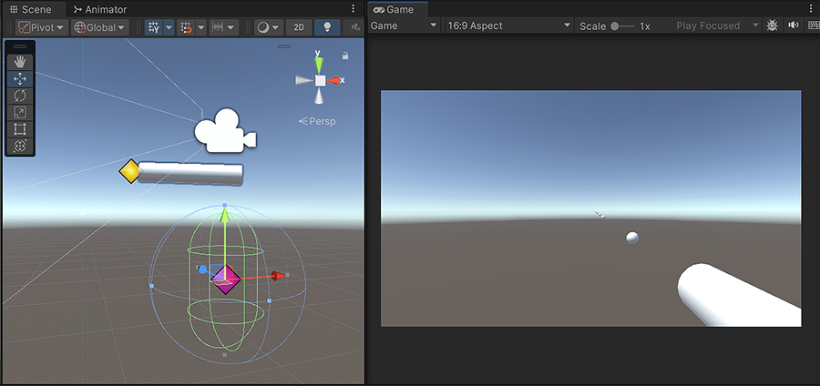
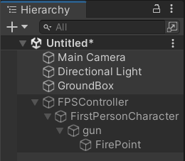
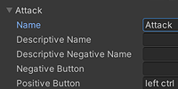
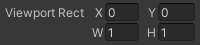
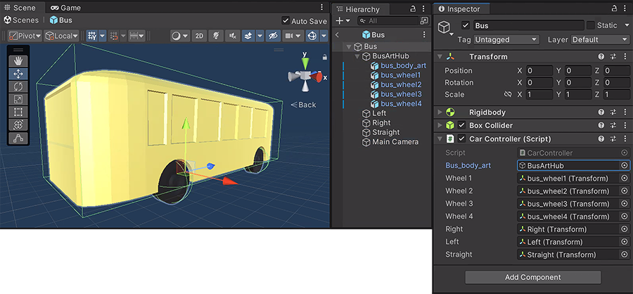
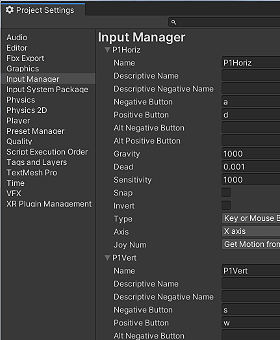

UNITY 3D - 3rd Person Character Control UNITY 3D - 3rd Person Character Control
This tutorial covers modules for 3D games with third-person characters.
For a first-person character controller, consider using the default First Person Controller package.
|
PLAYER MOVEMENT: Rigidbody and BoxCollider
In a Unity 3D scene, create a character that moves in the direction of the camera:
[A] BASIC SINGLE-PLAYER 3D CHARACTER
[STEP 1] CHARACTER SET-UP:
The basic set up of a 3D character is an Empty Game Object with the Visible Mesh parented below.
The Empty Game Object gets the Colliders, the RigidBody, the scripts, and the tag, "Player".
The Visible Mesh can get animation (Mecanim State Machine Animator), if it is an animated mesh.
a) VISIBLE MESH: Import your character model, drag into Hierarchy, and set transforms to world center.
Don't yet have a character model? Make a quick primitive proxy:
GameObject > 3D > Capsule, Scale X, Y, Z = 2. Reset Transforms, raise to stand on ground.
Game Object > 3D > Box, Scale small (0.3), parent and move to cylinder top-front (facing direction).
In the Inspector, remove colliders from both objects, (they are just meant to be the graphics).
Optionally, add a Material to both objects to change the character proxy color.
b) EMPTY GAME OBJECT: GameObject > Create Empty. Reset Transforms.
Move the Empty GO to half-way up the height of the character mesh / proxy.
Parent the character mesh under EmptyGO.
In the Inspector name the Empty GO "Player" and set the tag to "Player".
c) Select Player.
In the Inspector:
Hit [Add Component] to add Physics > RigidBody. Under Constraints lock off Rotate X and Z.
Hit [Add Component] to add Physics > CapsuleCollider. Edit Collider size to fit around the mesh.
d)
Create a ground:
Create a Box, set Scale to X = 60, Y = 0.5, Z = 60. You can also add a few ramps.
OPTIONAL: To prepare for Jumping functionality:
In the Hierarchy select any object and in the Inspector create a new Layer called "Ground".
Select all environment objects in your game. In the Inspector assign this Ground Layer.
Create another Empty GameObject. In the Inpector, name it "GroundCheck".
Reset Transforms, parent to Player, move to bottom
(must start at ground level for jump to work).
[STEP 2] SINGLE PLAYER MOVEMENT SCRIPT:
a) RightClick in the Project panel to create new C# script "PlayerMove3D.cs."
b) Drag the script onto Player and drag MainCamera into the cam script slot
PlayerMove3D.cs:
using System.Collections;
using System.Collections.Generic;
using UnityEngine;
public class
PlayerMove3D : MonoBehaviour {
//Animator anim;
Rigidbody rb;
public Transform cam;
public float speed = 6f;
public float turnSmoothTime =0.1f;
private float turnSmoothVelocity;
void Start(){
//anim = gameObject.GetComponentInChildren<Animator>();
rb = gameObject.GetComponent<Rigidbody>();
cam = GameObject.FindWithTag("MainCamera").GetComponent<Transform>();
}
void Update () {
float horiz = Input.GetAxisRaw("Horizontal");
float vert = Input.GetAxisRaw("Vertical");
Vector3 direct = new Vector3(horiz, 0f, vert).normalized;
if (direct.magnitude >= 0.1f) {
float targetAngle = Mathf.Atan2(direct.x, direct.z) * Mathf.Rad2Deg + cam.eulerAngles.y;
float angle = Mathf.SmoothDampAngle(transform.eulerAngles.y, targetAngle, ref turnSmoothVelocity, turnSmoothTime);
transform.rotation = Quaternion.Euler(0f, angle, 0f);
Vector3 moveDir = Quaternion.Euler(0f, targetAngle, 0f) * Vector3.forward;
rb.MovePosition(transform.position + moveDir * speed * Time.deltaTime);
}
else {
GetComponent<Rigidbody>().velocity = Vector3.zero;
GetComponent<Rigidbody>().angularVelocity = Vector3.zero;
}
}
}
|
A more advanced movement script, that includes Slope Movement:
PlayerSlopeMovement.cs:
using System.Collections;
using System.Collections.Generic;
using UnityEngine;
public class PlayerSlopeMovement : MonoBehaviour{
private Animator animator;
public float moveSpeed = 10f;
public float baseSpeed;
public float groundDrag;
public float jumpForce = 18f;
public float fallMultiplier = 9f;
public float jumpCooldown = 0.2f;
public float gravity = 18f;
public float airMultiplier = 0.6f;
private bool readyToJump = true;
private float lastBaseSpeed = -1f;
public float playerHeight;
public LayerMask whatIsGround;
public bool grounded = true;
public KeyCode jumpKey = KeyCode.Space;
public AudioSource walkAudio;
public AudioSource runAudio;
public Transform orientation;
private Rigidbody rb;
private PlayerStatsCollector statsCollector;
private float horizontalInput;
private float verticalInput;
private Vector3 moveDirection;
Vector3 velocity;
[Header("SlopeHandling")]
public float maxSlopeAngle =85;
private RaycastHit slopeHit;
private bool exitingSlope;
private void Start(){
animator = GetComponent<Animator>();
rb = GetComponent<Rigidbody>();
rb.freezeRotation = true;
statsCollector = PlayerStatsCollector.instance;
if (statsCollector != null){
SetBaseSpeed(statsCollector.GetCurrentMoveSpeed());
} else{
Debug.LogWarning("PlayerStatsCollector not found! Using default speed values.");
}
if (PlayerPrefs.HasKey("PlayerPosX")){
float x = PlayerPrefs.GetFloat("PlayerPosX");
float y = PlayerPrefs.GetFloat("PlayerPosY");
float z = PlayerPrefs.GetFloat("PlayerPosZ");
transform.position = new Vector3(x, y, z);
PlayerPrefs.DeleteKey("PlayerPosX");
PlayerPrefs.DeleteKey("PlayerPosY");
PlayerPrefs.DeleteKey("PlayerPosZ");
PlayerPrefs.Save();
}
}
private void Update(){
grounded = Physics.Raycast(transform.position, Vector3.down, playerHeight * 0.5f + 0.3f, whatIsGround);
if (grounded)
{rb.drag = groundDrag;}
else
{rb.drag = 0f;
}
// Dynamically pull speed from stats collector if changed
if (statsCollector != null)
{
float currentSpeed = statsCollector.GetCurrentMoveSpeed();
Debug.Log($"Stats collector returned speed: {currentSpeed}, lastBaseSpeed: {lastBaseSpeed}");
if (Mathf.Abs(currentSpeed - lastBaseSpeed) > 0.01f){
SetBaseSpeed(currentSpeed);
}
}
else{
// If we somehow lost the reference to the stats collector, try to find it again
statsCollector = PlayerStatsCollector.instance;
if (statsCollector != null){
Debug.Log("Reconnected to PlayerStatsCollector");
}
}
MyInput();
UpdateAnimationState();
SpeedControl();
// Re-enabled speed control to prevent excessive velocity
}
private void FixedUpdate(){
MovePlayer();
}
private void MyInput(){
horizontalInput = Input.GetAxisRaw("Horizontal");
verticalInput = Input.GetAxisRaw("Vertical");
if (Input.GetKeyDown(jumpKey) && readyToJump && grounded){
readyToJump = false;
Jump();
Invoke(nameof(ResetJump), jumpCooldown);
}
}
private void MovePlayer(){
moveSpeed = Input.GetKey(KeyCode.LeftShift) ? baseSpeed * 1.5f : baseSpeed;
moveSpeed = Mathf.Clamp(moveSpeed, 1f, 20f); // Clamp to avoid going infinite
Vector3 inputDirection = orientation.forward * verticalInput + orientation.right * horizontalInput;
moveDirection = inputDirection.normalized;
//SLOPE MANAGEMENT #3:
if (OnSlope() && !exitingSlope){
rb.AddForce(GetSlopeMoveDirection() * moveSpeed *20f, ForceMode.Force);
if (rb.velocity.y > 0){
rb.AddForce(Vector3.down *80f, ForceMode.Force);
}
}
//to prevent sliding down on slopes:
rb.useGravity = !OnSlope();
if (grounded){
rb.drag = groundDrag;
rb.AddForce(moveDirection * moveSpeed * 10f, ForceMode.Force);
}
else{
rb.drag = 0f;
rb.AddForce(moveDirection * moveSpeed * airMultiplier, ForceMode.Force);
velocity.y -= gravity * Time.deltaTime;
}
}
private void SpeedControl(){
//SLOPE MANAGEMENT #4:
if (OnSlope() && !exitingSlope){
if (rb.velocity.magnitude > moveSpeed){
rb.velocity = rb.velocity.normalized * moveSpeed;
}
}
//all the old content of this method;
else {
Vector3 flatVel = new Vector3(rb.velocity.x, 0f, rb.velocity.z);
if (flatVel.magnitude > moveSpeed){
Vector3 limitedVel = flatVel.normalized * moveSpeed;
rb.velocity = new Vector3(limitedVel.x, rb.velocity.y, limitedVel.z);
}
}
}
private void Jump(){
//Slope Mangement #5a:
exitingSlope = true;
//reset y velocity:
rb.velocity = new Vector3(rb.velocity.x, 0f, rb.velocity.z);
rb.AddForce(Vector3.up * jumpForce, ForceMode.Impulse);
}
private void ResetJump(){
readyToJump = true;
//Slope Mangement #5b:
exitingSlope = false;
}
public void SetBaseSpeed(float newSpeed){
if (float.IsNaN(newSpeed) || float.IsInfinity(newSpeed) || newSpeed <= 0f)
{
Debug.LogError($"Invalid base speed from stats collector: {newSpeed}. Using fallback of 5f.");
baseSpeed = 5f; // Set a fallback value
}
else{
baseSpeed = newSpeed; // This line was missing in the original
Debug.Log($"Updated player base speed to: {baseSpeed}");
}
// Always update lastBaseSpeed to prevent continuous attempts to update
lastBaseSpeed = newSpeed;
}
private void UpdateAnimationState(){
if (animator == null) return;
bool isMoving = horizontalInput != 0 || verticalInput != 0;
if (isMoving && grounded){
if (Input.GetKey(KeyCode.LeftShift)){
animator.SetBool("Running", true);
animator.SetBool("Walking", false);
if (!runAudio.isPlaying) runAudio.Play();
if (walkAudio.isPlaying) walkAudio.Stop();
}
else{
animator.SetBool("Walking", true);
animator.SetBool("Running", false);
if (!walkAudio.isPlaying) walkAudio.Play();
if (runAudio.isPlaying) runAudio.Stop();
}
}
else{
animator.SetBool("Walking", false);
animator.SetBool("Running", false);
if (walkAudio.isPlaying) walkAudio.Stop();
if (runAudio.isPlaying) runAudio.Stop();
}
// Jumping/falling
animator.SetBool("jumping", !grounded && rb.velocity.y > 0);
animator.SetBool("landing", !grounded && rb.velocity.y <= 0);
if (grounded) {
animator.SetBool("jumping", false);
animator.SetBool("landing", false);
}
}
private bool OnSlope(){
if (Physics.Raycast(transform.position, Vector3.down, out slopeHit, playerHeight * 0.5f + 0.3f)) {
float angle = Vector3.Angle(Vector3.up, slopeHit.normal);
return angle < maxSlopeAngle && angle != 0;
}
return false;
}
private Vector3 GetSlopeMoveDirection(){
return Vector3.ProjectOnPlane(moveDirection, slopeHit.normal).normalized;
}
} |
 [STEP 3] SIMPLE CAMERA FOLLOW WITH LERP (single or two player): [STEP 3] SIMPLE CAMERA FOLLOW WITH LERP (single or two player):
SINGLE PLAYER: Use the default MainCamera:
Create and add this script to the camera "Camera3DLERP.cs".
Drag the Player into the target script slot.
Set offset values for the camera distance to Player (try X = 0, Y = 11, Z = -15).
Camera3DLERP.cs:
using UnityEngine;
public class Camera3DLERP : MonoBehaviour {
private Transform target;
// drag intended Player object into Inspector slot
public float smoother = 5f;
public Vector3 offset = new Vector3(4, 2, 0);
// adjust the offset in the editor
void Start(){
target = GameObject.FindWithTag("Player").GetComponent<Transform>();
}
void FixedUpdate () {
Vector3 newPos = target.position + offset;
Vector3 smPos = Vector3.Lerp (transform.position, newPos, smoother * Time.deltaTime);
transform.position = smPos;
transform.LookAt (target);
}
} |
[STEP 4] HEALTHBAR that follows the player:
Set up Canvas elements:
a) Create a GameObject > UI > Canvas.
(This is the space that will contain the healthbar, and any other player statistics you want to display).
To make the healthbar follow the character (so it can move in the game world instead of staying locked on the HUD overlay):
- In the Inspector set RenderMode = World Space.
- Set Rect Transform to fit in your game space. Try width = 2, height = 1, PosX / Pos Y / PosZ = 0, then raise above character head.
b) Create a GameObject > UI > Image for a healthbar background.
- Name it "HealthBG".
- Click the Rect Tool (upper left corner of Unity) to set desired width and height (usually a long rectangle. Try width = 1, height = 0.15).
In Inspector set color dark and semi-transparent (try black, Alpha = 120).
c) In the Hierarchy select and duplicate the HealthBG to make the actual healthbar.
Drag the duplicate onto HealthBG to make it a child of HealthBG.
In the Inspector name the duplicate "HealthBar".
Change color to green with alpha set to mostly visible (200).
 d) Download and import this WhitePixel32.png image.
d) Download and import this WhitePixel32.png image.
In the Inspector, set Texture Type = "Sprite (2D and UI)", and at bottom hit [Apply].
e) In the Hierarchy select the HealthBar object. In the Inspector, under Image:
- For the SourceImage, click the hotspot (far right) and choose WhitePixel32 (can be your own art!).
- Set Image Type = Filled.
- Set Fill Method = Horizontal.
- Set Fill Origin = Right.
Scrub the Fill Amount to see it work!
This is the parameter that will change through the damage script
f) Create the script to display damage:
- RightClick in the Project panel to create new C# script "HealthBarThirdPerson.cs."
- Drag the script onto the Canvas object for your healthbar.
- Drag HealthBar into the image script slot.
NOTES:
Health can be 0-100 or 0-200, etc, but fillAmount only sees 0-1, so we divide current health by the starting full
health value before it is displayed.
Also, player character script should talk with a GameHandler, to track the health stat between Scenes/Levels (stats handled in the Canvas is just for testing-- use a centralized state!).
HealthBar_ThirdPerson.cs
using System.Collections;
using System.Collections.Generic;
using UnityEngine;
using UnityEngine.UI;
using UnityEngine.SceneManagement;
public class HealthBar_ThirdPerson : MonoBehaviour {
public float startHealth = 100;
private float health;
//public GameObject deathEffect;
public Image healthBar;
public Color healthyColor = new Color(0.3f, 0.8f, 0.3f);
public Color unhealthyColor = new Color(0.8f, 0.3f, 0.3f);
//temporary time variables:
public float timeToDamage = 5f;
private float theTimer;
public float damageAmt = 10f;
private void Start () {
health = startHealth;
theTimer= timeToDamage;
}
// this timer is just to test damage. Comment-out when no longer needed
void FixedUpdate () {
theTimer -= Time.deltaTime;
if (theTimer <= 0) {
TakeDamage(damageAmt);
theTimer = timeToDamage;
}
}
public void SetColor(Color newColor){
healthBar.GetComponent<Image>().color = newColor;
}
public void TakeDamage (float amount){
health -= amount;
healthBar.fillAmount = health / startHealth;
//turn red at low health:
if (health < 0.3f){
if ((health * 100f) % 3 <= 0){
SetColor(Color.white);
Die();
}
else {
SetColor(unhealthyColor);
}
}
else {
SetColor(healthyColor);
}
}
public void Die(){
Debug.Log("You Died So Much");
// death stuff. change scene? how about a particle effect?
//Vector3 objPos = this.transform.position
//Instantiate(deathEffect, objPos, Quaternion.identity) as GameObject;
//SceneManager.LoadScene ("Scene_lose");
}
} |
g) For a 3D game, we want the healthbar to always face the screen (called a "Billboard" effect).
Create a script and apply it to the Canvas:
BillboardEffect.cs
using System.Collections;
using System.Collections.Generic;
using UnityEngine;
public class BillboardEffect : MonoBehaviour {
void Update()
{
transform.LookAt(transform.position + Camera.main.transform.rotation *-
Vector3.back,
Camera.main.transform.rotation *- Vector3.down);
}
}
//OR TRY:
// public void Update()
{
// Camera camera = Camera.main;
// transform.LookAt(transform.position + camera.transform.rotation * Vector3.forward,
// camera.transform.rotation * Vector3.up);
// }
//OR TRY:
// void Update()
{
// transform.forward = Camera.main.transform.forward;
// }
|
Want to try something nifty?
You can get a power-up bar using the same objects by replacing the HealthBar script on the Canvas with this script: PowerBoostBar.cs.
Use this to show a weapon recharging, etc
|
| |

[B] SHOOTING PROJECTILES
This tutorial adds projectile shooting functionality to a player controller.
It works with both the Standard Assets FP controller and the custom controller (explained above):
a) Create the Gun (visible mesh):
Let's start with a primitive Cylinder, which can be later replaced wth a modeled mesh.
- For the custom 3rd person controller explained above, select the player and rightclick to add a Cylinder.
- For the tandard Assets FPS Controller, select the Player Camera, called "FPS Controller".
- Right-click Camera to create a 3D Object > Cylinder. It should be a child of the Camera.
-
In the Inspector, Right-click the Collider Component and choose [Remove Component].
- Name the Cylinder "Gun" and apply these Transforms:
POSITION: X = 0.7, Y = -0.5, Z = 0.5
ROTATION: X = 90, Y = 0, Z = 0
SCALE: X = 0.3, Y = 0.8, Z = 0.3
b) Add the FirePoint and BasePoint:
-
Right-click Gun to create a Empty GameObject.
This Empty should be a child of Gun.
- In the Scene view, Move one Empty to the Gun tip (should be moved on the blue Z axis, but in Inspector it will show change on the Y axis (1.2), because it is parented to a rotated cyclinder).
- In the Inspector, name it "FirePoint".
- RightClick FirePoint to Duplicate it. Move the copy back along the gun barrel. In the Inspector, name it "BasePoint".
NOTE: Both of these Empty GameObjects will be easirr to manage if they are visible: In the Inspector topleft, give them a diamind icon.
c) Create the Player Projectile (visible mesh):
Start with a primitive Sphere, which can be later replaced wth a modeled mesh.
-
Game Object > 3D > Sphere. Name it "Projectile," Scale small (0.2), reset Transforms.
- Under the Sphere Collider, turn on "Is Trigger".
- [Add Component] > Rigidbody, turn off "Use Gravity".
d) Add Projectile Script:
Create a new C# script called "PlayerProjectle.cs". Add the content below, save, return to Unity.
Apply this Script to your Player Projectile.
Impact explosion: Optionally, un-comment and fill the hitVFX script slot:
If you have a particle effect prefab ready, un-comment the two VFX lines and save the script.
In the Unity Inspector drag the particle effect prefab into the hitVFX script (note the DestroyEffect script, below).
Impact Audio: Optionally, un-comment and fill the hitSFX script slot:
If you have a sound effect .WAV ready, un-comment the two SFX lines and save the script.
In the Unity Hierarchy drag the .WAV onto the projectile parent object, then in the Inspector drag the new AudioSource component into the hitSFX script slot.
PlayerProjectile.cs script:
using System.Collections.Generic;
using System.Collections;
using UnityEngine;
public class
PlayerProjectile : MonoBehaviour{
public int damage = 1;
//public GameObject hitVFX; //uncomment VFX #1
//public AudioSource hitSFX; //uncomment SFX #1
public float SelfDestructTime =
2.0f;
//Time after being fired to disappear
public float SelfDestructSFX =
0.5f;
//Time after impact for playing sound effect
public GameObject projectileArt;
void Start(){
selfDestruct();
}
//if bullet hits a collider, play explosion animation, then destroy the effect and the bullet
void OnTriggerEnter(Collider other){
if
(other.gameObject.layer == LayerMask.NameToLayer("Enemies")) {
//gameHandlerObj.playerGetHit(damage);
//other.gameObject.GetComponent<EnemyMeleeDamage>().TakeDamage(damage);
}
if (other.gameObject.tag !=
"Player") {
//GameObject animEffect = Instantiate (hitVFX, transform.position, Quaternion.identity);
//uncomment VFX #2
//hitSFX.Play();
//uncomment SFX #2
gameObject.GetComponent<Collider>().enabled = false;
projectileArt.SetActive(false);
StartCoroutine(selfDestructHit());
}
}
IEnumerator selfDestructHit(){
yield return new WaitForSeconds(SelfDestructSFX);
Destroy (gameObject);
}
IEnumerator selfDestruct(){
yield return new WaitForSeconds(SelfDestructTime);
Destroy (gameObject);
}
} |
e) Make the PlayerProjectile Prefab:
- Drag the PlayerProjectile into the Project panel to make it a Prefab.
- Delete the original PlayerProjectile from the Hierarchy.
f) Add Player Shooting Script:
- Create a new C# script called "PlayerShoot.cs". Add the content below, save, return to Unity.
- Apply this Script to your Player character, top level.
- Fill the script slots:
Drag FireBase and FirePoint from the Hierarchy into the fireBase and firePoint script slots.
Drag PlayerProjectile Prefab from Project panel into the projectilePrefab script slot.
PlayerShoot.cs script:
using System.Collections.Generic;
using System.Collections;
using UnityEngine;
public class PlayerShoot : MonoBehaviour{
//public Animator animator;
public Transform fireBase;
public Transform firePoint;
public GameObject projectilePrefab;
public float projectileSpeed = 10f;
public float attackRate = 2f;
private float nextAttackTime = 0f;
void Start(){
//animator = gameObject.GetComponentInChildren<Animator>();
}
void Update(){
if (Time.time >= nextAttackTime){
//if (Input.GetKeyDown(KeyCode.Space))
if (Input.GetAxis("Attack") > 0){
playerFire();
nextAttackTime = Time.time + 1f / attackRate;
}
}
}
void playerFire(){
//animator.SetTrigger ("Fire");
Vector3 fwd = (firePoint.position - fireBase.position).normalized;
//Spawn a bullet that inherits rotation from the instantating object:
GameObject projectile = Instantiate(projectilePrefab, firePoint.position, transform.rotation);
projectile.GetComponent<Rigidbody>().AddForce(fwd * projectileSpeed, ForceMode.Impulse);
}
} |

g). Create an "Attack" Input:
Open Edit > Project Settings panel to select the Input Manager.
Open the first Fire1 and change it to "Attack".
Leave settings on default (left mouse click to shoot).
h). Create the Particle Effect projectile impact explosion:
- RightClick the Hierarchy to create an effect > Particle System. In Inspector rename it "PS_Boom".
- In the Inspector, set parameters. In general, life short, size small, emission to burst, and Color over Lifetime to allow a fade:
Duration = 4, Start Lifetime = 2, Start Speed = 0.5, Start Size = 0.2
Under Emission: Set Rate Over Time = 0, hit [+] to add a burst.
Under Color Over Lifetime: Click the color box, set bottom tab colors as desired (typically yellow, red, and black) and top right tab = 0 (for fade to transparency).
- Create a C# script called "DestroyEffect.cs". Add content below. In Unity apply to PS_Boom.
- Drag the Particle Effect
into the Assets > Prefabs folder to make it a Prefab.
- Delete it from the Scene. Drag the Prefab from the Assets folder into the Projectile script slot.
DestroyEffect.cs script:
using System.Collections.Generic;
using System.Collections;
using UnityEngine;
public class DestroyEffect : MonoBehaviour{
public float selfDestructTime = 2f;
void Start(){
StartCoroutine(SelfDestruct());
}
IEnumerator selfDestruct(){
yield return new WaitForSeconds(selfDestructTime);
Destroy (gameObject);
}
} |
|
| |
[C] BASIC TWO-PLAYER 3D CHARACTER
TWO PLAYER MOVEMENT SCRIPT:
This is a local multiplayer system: Two Players on the same keyboard.
1. Start with the Player character created above:
- An Empty Game Object named Player with the Player tag,
- Rigidboy with Rotation Constraints on X and Z,
- Capsule Collider sized to fit around mesh,
- child Player Mesh.
2. Duplicate the Player:
- Duplicate the Player Character.
Name one "Player1" and the other "Player2".
- Create and apply a new Material to change the color of Player2.
3. Create and adjust the Cameras to each view only half the screen: 
a) Select CameraMain.
In the Inspector find the Viewport Rect properties.
Set display set W = 0.5 (for half the width, on the left side)
b) Create a new GameObject > Camera. Name it "CameraP2".
Set W = 0.5 (for the same half width) and set X = 0.5, so it moves to show the right side of the screen.
Apply the Camera3DLERP.cs script (above), drag Player2 into target, set offset (try 0, 11, 15).
4. Create the new Script:
- RightClick in Project panel to create a new C# script "PlayerMove3D_2P.cs" with content below.
- Apply this script to both characters (remove the previous PlayerMove script, if applied)
- CameraMain into the cam script slot of Player1.
- Drag CameraP2 into the cam script slot of Player2.
5. Set distinct input axis in the Input Manager for each Player:
- In the Input Manager, add two new Axis named "HorizP2" and "VertP2"
- Set HorizP2 the same as Horizontal, but only use the arrow keys.
- Set VertP2 the same as Vertical, but only use the arrow keys.
- Revise Hozontal and Vertical to remove the arrow keys (so they only use WASD).
PlayerMove3D_2P.cs:
using System.Collections;
using System.Collections.Generic;
using UnityEngine;
public class PlayerMove3D_2P : MonoBehaviour {
//Animator anim;
Rigidbody rb;
private Transform cam;
public float speed = 6f;
public float turnSmoothTime =0.1f;
private float turnSmoothVelocity;
public bool isPlayer1 = true;
void Start(){
//anim = gameObject.GetComponentInChildren<Animator>();
rb = gameObject.GetComponent<Rigidbody>();
}
void Update () {
if (isPlayer1) {
float horiz = Input.GetAxisRaw("Horizontal");
float vert = Input.GetAxisRaw("Vertical");
} else {
float horiz = Input.GetAxisRaw("HorizP2");
float vert = Input.GetAxisRaw("VertP2");
}
Vector3 direct = new Vector3(horiz, 0f, vert).normalized;
if (direct.magnitude >= 0.1f) {
float targetAngle = Mathf.Atan2(direct.x, direct.z) * Mathf.Rad2Deg + cam.eulerAngles.y;
float angle = Mathf.SmoothDampAngle(transform.eulerAngles.y, targetAngle, ref turnSmoothVelocity, turnSmoothTime);
transform.rotation = Quaternion.Euler(0f, angle, 0f);
Vector3 moveDir = Quaternion.Euler(0f, targetAngle, 0f) * Vector3.forward;
rb.MovePosition(transform.position + moveDir * speed * Time.deltaTime);
}
else {
GetComponent<Rigidbody>().velocity = Vector3.zero;
GetComponent<Rigidbody>().angularVelocity = Vector3.zero;
}
}
} |
|
| |

[D] VEHICLE DRIVING
Simple Vehicle | Advanced Vehicle
A vehicle moves differently than a person. Motion forward and backwards build speed to accelerate and take a distance to slow and come to a stop. Turning is particularly different, rotating on curves based on the distance between front and back wheels.
 Simple Car Structure and Motion Simple Car Structure and Motion
(4 minute video and GitHub, includes
skid marks and audio):
1.
Create the Car parent object:
Create an Empty Game Object. In Inspector, rename "Car", Reset Transforms.
[Add Component] > BoxCollider. Center Y=2. Size X = 2, Y = 2, Z = 4.
[Add Component] > RigidBody. Set RigidBody constraints: lock X and Z rotation.
Right-click Car, add an Empty Game Object.
In Inspector name it "Right" and add an icon (upper-left corner). Rotation: X=0, Y=90, Z=-10.
Duplicate this GameObject, name it "Left". Rotation: X=0, Y=-90, Z=10.
Duplicate this GameObject, name it "Straight". Rotation: X=0, Y=0, Z=0.
2.
Create the CarArtHub object:
Right-click Car, add an Empty Game Object.
In Inspector, rename it "CarArtHub", Reset Transforms.
(All car art objects will be parented to this Empty, and this Empty will fill the CarBody script slot).
3. Create the Car Art out of primitives
(MODELING NOTE: if you are creating the models in Blender, position them at 0/0/0 and Object > Apply Transforms to remove irregular transforms):
Make the car Body:
a. Right-click CarArtHub, create a 3D Object > Cube. Rename it: "car_art".
b. Position: Y = 1.5. Size: X = 2, Y = 1, Z = 4.
c. Right-click car_art, create a 3D Object > Cube.
d. Position: Y = 1. Size: X = 1, Y = 1, Z = 0.6.
Make the Wheels:
a. Right-click CarArtHub, create a 3D Object > Cylinder. Rename it: "wheel1".
b. Position: X=-1, Y=0.75, Z=1.06. Rotation: Z = 90. Size: X=1, Y= 0.2, Z=1.
c. Right-click the Cylinder Collider component, to choose [Remove Component]
d. [Add Component] > Sphere Collider.
e. Duplicate 3 times, name them wheel2, wheel3, and wheel4.
f. Position the wheels at the four car corners.
4. Create a new C# script, name it "CarController.cs". Add the content below, save, return to Unity.
Populate all script slots:
Add car_art into the CarBody slot
Add each wheel into the wheel Transform slots.
Add the Right, Left and Straight Empty Game Objects in the corresponding Transform slots.
CarController.cs (basic version):
using System.Collections;
using System.Collections.Generic;
using UnityEngine;
public class CarController : MonoBehaviour {
private Rigidbody RB;
public GameObject CarBody;
public Transform Wheel1;
public Transform Wheel2;
public Transform Wheel3;
public Transform Wheel4;
public Transform Right;
public Transform Left;
public Transform Straight;
public float speedFWD = 50;
public float speedBACK = 30;
public float speedTurnFWD = 50;
public float speedTurnBACK = 40;
private void Start(){
RB = gameObject.GetComponent<Rigidbody>();
}
private void Update() {
if (Input.GetKey("w")){
RB.velocity += transform.forward * speedFWD * Time.deltaTime;
Wheel1.Rotate(0, -500, 0 * Time.deltaTime);
Wheel2.Rotate(0, -500, 0 * Time.deltaTime);
Wheel3.Rotate(0, 500, 0 * Time.deltaTime);
Wheel4.Rotate(0, 500, 0 * Time.deltaTime);
}
if (Input.GetKey("s")){
RB.velocity -= transform.forward * speedBACK * Time.deltaTime;
Wheel1.Rotate(0, 500, 0 * Time.deltaTime);
Wheel2.Rotate(0, 500, 0 * Time.deltaTime);
Wheel3.Rotate(0, -500, 0 * Time.deltaTime);
Wheel4.Rotate(0, -500, 0 * Time.deltaTime);
}
if (Input.GetKey("a") && Input.GetKey("w")){
transform.Rotate(0, -30 * Time.deltaTime, 0);
CarBody.transform.rotation = Quaternion.Lerp(CarBody.transform.rotation, Left.rotation, 4 * Time.deltaTime);
RB.velocity += CarBody.transform.forward * speedTurnFWD * Time.deltaTime;
RB.velocity -= transform.forward * speedTurnBACK * Time.deltaTime;
}
if (Input.GetKey("d") && Input.GetKey("w")){
transform.Rotate(0, 30 * Time.deltaTime, 0);
CarBody.transform.rotation = Quaternion.Lerp(CarBody.transform.rotation, Right.rotation, 4 * Time.deltaTime);
RB.velocity += CarBody.transform.forward * speedTurnFWD * Time.deltaTime;
RB.velocity -= transform.forward * speedTurnBACK * Time.deltaTime;
}
if ((!Input.GetKey("d")) && (!Input.GetKey("a"))){
CarBody.transform.rotation = Quaternion.Lerp(CarBody.transform.rotation, Straight.rotation, 4 * Time.deltaTime);
}
}
} |
Hit [Play] to test your car with [W][A][S][D] keys! Turn off [Play] to resume work.
If the wheels turn on the wrong axis, try changing which axis is turning in the Update() function.
The default is in the Y axis, so try swappign the value change to X for all wheels:
EXAMPLE: Wheel1.Rotate(-500, 0, * Time.deltaTime);
5. Add Audio to the Car:
Sound Effects: Car Engine SFX | Car Drift SFX
a. Select the Car, right-click to add an Empty Game Object. In the Inspector name it "AUDIO".
b. Right-click Audio to create another Empty Game Object. Name it "CarEngineSFX".
c. With CarEngineSFX selected, [Add Component] AudioSource.
d. Download and import this Car Engine WAV file into the Project, and drag it into the AudioSource.
e. Duplicate CarEngineSFX and rename it "CarDriftSFX".
f. Download and import
this Car Drift MP3 file into the Project, and drag it into the AudioSource.
6. Create a Skidmarks:
a. RightClick each wheel to create an Empty Game Object. Name them "wheel1_skid", etc.
b. In the Scene view, drag each to the bottom of their wheel (so they are at ground level).
c. In the Hierarchy, drag each wheel_skid up so they are no longer parented to the wheels.
d. Select all four wheel_skid object, and [Add Component] > TrailRenderer.
e. In the graph, drag leftpoint down to 0.5. Add a midpoint, drag rightpoint down to 0.
f. Right-click the Assets folder to create a new Material.
g. Name it "skid_m", set to a dark color, drag into the TrailRenderers material slot.
7. Revise "CarController.cs" with the content below, save, return to Unity.
Populate new script slots:
Add the wheel_skid objects into all Trail slots.
Add the two Audio files into the AudioSource Script slots.
CarController.cs (new content in bold):
using System.Collections;
using System.Collections.Generic;
using UnityEngine;
public class CarController : MonoBehaviour {
private Rigidbody RB;
public GameObject CarBody;
public Transform Wheel1;
public Transform Wheel2;
public Transform Wheel3;
public Transform Wheel4;
public Transform Right;
public Transform Left;
public Transform Straight;
public TrailRenderer Trail1;
public TrailRenderer Trail2;
public TrailRenderer Trail3;
public TrailRenderer Trail4;
public AudioSource CarEngine;
public AudioSource CarDrift;
public bool DriftCheck;
private void Start(){
RB = gameObject.GetComponent<Rigidbody>();
}
private void Update () {
if (Input.GetKey("w")){
RB.velocity += transform.forward * 150 * Time.deltaTime;
Wheel1.Rotate(0, 0, -500 * Time.deltaTime);
Wheel2.Rotate(0, 0, -500 * Time.deltaTime);
Wheel3.Rotate(0, 0, 500 * Time.deltaTime);
Wheel4.Rotate(0, 0, 500 * Time.deltaTime);
if (CarEngine.isPlaying == false){
CarEngine.Play();
}
}
else {
CarEngine.Stop();
}
if (Input.GetKey("s")){
RB.velocity -= transform.forward * 80 * Time.deltaTime;
Wheel1.Rotate(0, 0, 500 * Time.deltaTime);
Wheel2.Rotate(0, 0, 500 * Time.deltaTime);
Wheel3.Rotate(0, 0, -500 * Time.deltaTime);
Wheel4.Rotate(0, 0, -500 * Time.deltaTime);
}
if (Input.GetKey("a") && Input.GetKey("w")){
transform.Rotate(0, -30 * Time.deltaTime, 0);
CarBody.transform.rotation = Quaternion.Lerp(CarBody.transform.rotation, Left.rotation, 4 * Time.deltaTime);
RB.velocity += CarBody.transform.forward * 120 * Time.deltaTime;
RB.velocity -= transform.forward * 110 * Time.deltaTime;
}
if (Input.GetKey("d") && Input.GetKey("w")){
transform.Rotate(0, 30 * Time.deltaTime, 0);
CarBody.transform.rotation = Quaternion.Lerp(CarBody.transform.rotation, Right.rotation, 4 * Time.deltaTime);
RB.velocity += CarBody.transform.forward * 120 * Time.deltaTime;
RB.velocity -= transform.forward * 110 * Time.deltaTime;
}
if ((!Input.GetKey("d")) && (!Input.GetKey("a"))){
CarBody.transform.rotation = Quaternion.Lerp(CarBody.transform.rotation, Straight.rotation, 4 * Time.deltaTime);
}
if ((CarBody.transform.localRotation.y * 100 > 15) || (CarBody.transform.localRotation.y * 100 < -15)){
Trail1.emitting = true;
Trail2.emitting = true;
Trail3.emitting = true;
Trail4.emitting = true;
if (DriftCheck == false){
DriftCheck = true;
CarDrift.Play();
}
}
else{
DriftCheck = false;
Trail1.emitting = false;
Trail2.emitting = false;
Trail3.emitting = false;
Trail4.emitting = false;
}
}
}
|

More Complex Car Structure and Motion
(12 minute video and GitHub, includes
wheel colliders):
NOTES TO COME
|
| |
[E] SLIME UNDULATION
Slime Set-Up | Slime Scale Script and Animation Curves
A pretty specific movement type to illustarte the power of Animation Curves and Tweening to define movement on a 3D object. In this case, whenever the charater moves or jumps, the mesh squashes and stretches.
Slime Set-Up:
1. Create the Slime object:
Create an Empty Game Object. In Inspector, rename "PlayerSlime", Reset Transforms.
Add the tag "Player" (if it is the player)
[Add Component] > BoxCollider. Center Y=0.5. leave Sizes = 1.
[Add Component] > RigidBody. Set RigidBody constraints: lock Rotation X and Z.
Right-click Slime, add an Empty Game Object.
In Inspector name it "scaleTween".
2. Create the Mesh:
Right-click scaleTween, add a 3D Object > Sphere.
Remove the default SphereCollider.
Right-click the Inspector to Create a material. Name it Slime_m. Set Albedo color = green.
3. Add a basic movement script to the PlayerSlime
For example, use this PlayerMove3D script and this CameraFollow3D script (if it is the player).
I am assuming the Player in the following, and using the Input.GetAxis "Horizontal" and "Vertical", and Input.GetButtonDown "Jump".
a. In the movement script, include these variables:
// Variables to activate for FixedUpdate action:
bool jumpTweenActive = false;
float moveForward = 0f;
float moveSide = 0f;
// Better fall variables:
public float fallMultiplier = 2.5f;
public float lowJumpMultiplier = 02f;
|
b. In the Update() function input listeners, include commands to activate the jumpTweenActive variable in the jump and BetterFall conditions (also set moveForward and moveSide to 1 or -1 based on Vertical and Horizontal axis values, not shown here):
// Jump:
if (Input.GetButtonDown("Jump")){
rb.AddForce (Vector3.up * JumpSpeed);
jumpTweenActive = true;
}
// Better Fall:
if (rb.velocity.y < 0.3f) {
rb.velocity += Vector3.up * Physics.gravity.y * (fallMultiplier - 1) * Time.deltaTime;
} else if (rb.velocity.y >0 && !Input.GetButtonDown("Jump")){
jumpTweenActive = true;
rb.velocity += Vector3.up * Physics.gravity.y * (lowJumpMultiplier - 1) * Time.deltaTime;
}
|
c. In the FixedUpdate() function activate the slime script:
// TWEENING jump:
if (jumpTweenActive){
GetComponent<Slime_Scale>().jumpTweenOn = true;
jumpTweenActive = false;
}
// TWEENING walk:
else if ((moveForward != 0)||(moveSide != 0)) {
GetComponent<Slime_Scale>().moveTweenOn = true;
} else {
GetComponent<Slime_Scale>().moveTweenOn = false;
}
|
Slime Scale Script:
4. Add a script to make the player mesh undulate:
Create a new C# script, name it "Slime_Scale.cs".
Save and in Unity apply to the PlayerSlime object.
Slime_Scale.cs (new content in bold):
using System.Collections;
using System.Collections.Generic;
using UnityEngine;
public class Slime_Scale : MonoBehaviour {
// This script uses tweening to make the character undulate as it moves, jumps, etc
// Right-click the character to make an Empty GO child called "ScaleTween".
// Make the Mesh a child of ScaleTween so the mesh inherits scaling from ScaleTween.
// There is a new AnmationCurve for each type of motion: move, jump, etc.
// Each starts at 1, ends at 1, and has at least one middle keyframe.
// In this case, Move center goes down and jump goes up.
public Transform scaleTweener;
Vector3 startScale;
public AnimationCurve curveMove = AnimationCurve.EaseInOut(0f, 0f, 1f, 1f);
public AnimationCurve curveJump = AnimationCurve.EaseInOut(0f, 0f, 1f, 1f);
float elapsed = 0f;
float elapsedJump = 0f;
// bools activated by a separate character movement script:
public bool jumpTweenOn = false;
public bool moveTweenOn = false;
private void Start(){
startScale = scaleTweener.localScale;
}
private void FixedUpdate () {
//TWEENING jump (curve goes up). Note it will always finish the current elapse:
if ((jumpTweenOn)||(elapsedJump > 0)){
Vector3 newScale = new Vector3(startScale.x - (curveJump.Evaluate(elapsedJump) -1),
startScale.y + (curveJump.Evaluate(elapsedJump) -1),
startScale.z - (curveJump.Evaluate(elapsedJump) -1)
);
scaleTweener.localScale = newScale;
elapsedJump += Time.deltaTime;
//reset / end:
if (elapsedJump >= 1f){
elapsedJump = 0;
jumpTweenOn = false;
}
}
//TWEENING walk (curve goes down). Note it will always finish the current elapse:
if ((moveTweenOn)||(elapsed > 0)){
Vector3 newScale = new Vector3(startScale.x + (1-curveMove.Evaluate(elapsed)),
startScale.y * curveMove.Evaluate(elapsed),
startScale.z + (1-curveMove.Evaluate(elapsed))
);
scaleTweener.localScale = newScale;
elapsed += Time.deltaTime;
//reset / loop:
if (elapsed >= 1f){
elapsed = 0;
}
}
}
}
|
Slime Curve Data:
5. In the Inspector, populate new script slots:
Add the scaleTween object to the scaleTween slot.
Click on the AnimatinCurves to set the desired curves, or rightclick them to paste this data:
| Curve Data for Move (copy and right-click in the Inspector curve to paste): |
| |
UnityEditor.AnimationCurveWrapperJSON:{"curve":{"serializedVersion":"2",
"m_Curve":
[{"serializedVersion":"3",
"time":0.0,
"value":0.99468994140625,
"inSlope":-0.00013183144619688392,
"outSlope":-0.00013183144619688392,
"tangentMode":0,
"weightedMode":0,
"inWeight":0.0,
"outWeight":0.43180805444717409},
{"serializedVersion":"3",
"time":0.4921168088912964,
"value":0.7032498121261597,
"inSlope":-0.001537143369205296,
"outSlope":-0.001537143369205296,
"tangentMode":0,
"weightedMode":0,
"inWeight":0.3333333432674408,
"outWeight":0.5159648060798645},
{"serializedVersion":"3",
"time":1.0,"value":1.0,
"inSlope":0.0,
"outSlope":0.0,"tangentMode":0,
"weightedMode":0,
"inWeight":0.38558733463287356,
"outWeight":0.0}],
"m_PreInfinity":2,
"m_PostInfinity":2,
"m_RotationOrder":4}}
|
Curve Data for Jump (copy and right-click in the Inspector curve to paste): |
| |
UnityEditor.AnimationCurveWrapperJSON:{"curve":{"serializedVersion":"2",
"m_Curve":[{"serializedVersion":"3",
"time":0.0,"value":1.0,
"inSlope":2.8031272888183595,
"outSlope":2.8031272888183595,
"tangentMode":0,
"weightedMode":0,
"inWeight":0.0,
"outWeight":0.24098551273345948},
{"serializedVersion":"3",
"time":0.10051063448190689,
"value":1.2000000476837159,
"inSlope":1.2370513677597047,
"outSlope":1.2370513677597047,
"tangentMode":0,
"weightedMode":0,"inWeight":0.4466570019721985,
"outWeight":0.0713697075843811},
{"serializedVersion":"3",
"time":0.40204253792762759,
"value":1.2000000476837159,
"inSlope":-1.2984205484390259,
"outSlope":-1.2984205484390259,
"tangentMode":0,
"weightedMode":0,
"inWeight":0.42589667439460757,
"outWeight":0.46982529759407046},
{"serializedVersion":"3",
"time":0.47530677914619448,
"value":1.0411547422409058,
"inSlope":-2.7838730812072756,
"outSlope":-2.7838730812072756,
"tangentMode":0,"weightedMode":0,
"inWeight":0.3333333432674408,
"outWeight":0.3333333432674408},
{"serializedVersion":"3",
"time":1.0,"value":1.0,
"inSlope":-2.8526015281677248,
"outSlope":-2.8526015281677248,
"tangentMode":0,"weightedMode":0,
"inWeight":0.24184474349021913,
"outWeight":0.0}],
"m_PreInfinity":2,"m_PostInfinity":2,
"m_RotationOrder":4}}
|
|
| |
PLAYER MOVEMENT: Character Controller
(Source Videos: 3rd person, and 1st-person with gravity / jumping):
In a Unity 3D scene, we create a character that moves in the direction of the camera:
PLEASE NOTE: This tutorial should be updated with the newer Input System Package.
See these two quick tutorials:
Part 1 and
Part 2.
|
[STEP 1] CHARACTER SET-UP:
The basic set up of a 3D character is an Empty Game Object with the Visible Mesh parented below.
- The Empty Game Object gets the Colliders, the RigidBody, the scripts, and the tag (like "Player").
- The Visible Mesh can get animation (Mecanim State Machine Animator), if it is an animated mesh.
a) VISIBLE MESH: Import your character model, drag into Hierarchy, and set transforms to world center.
Don't yet have a character model? Make a quick primitive proxy:
- Create a tall Cylinder (y = 1.2), located at world center, standing on your ground.
- Create a small Box (0.2), move to the top and front of the cylinder, and parent beneath (to show which way it is facing).
In the Inspector, remove the colliders from both 3D objects, since they are just meant to be the Visible Mesh. Optionally, add a Material to both objects to change the character proxy color.
b) EMPTY GAME OBJECT: Create the Empty Game Object. Set transforms to world center. Raise the Empty GO so it is half-way up the height of the character mesh/proxy. Parent the character under the Empty Game Object. Name the Empty GO "PlayerCharacter" and in Inspector set tag to Player.
c) Select PlayerCharacter and hit [Add Component] to add a CharacterController collider (INSTEAD of a regular Collider and a RigidBody). Set Radius from 0.5 to 0.6 and Height from 2 to 3.6.
d) To prepare for Jumping functionality:
- Create another Empty GameObject, name it "GroundCheck". Set Transforms to world center, parent below PlayerCharacter, and move to very bottom,
(needs to start at ground level for jump to work).
- Create a simple environment (a box for the ground, a few ramps, etc). In the Hierarchy select all environment objects in your game. In the Inspector set them all to the same Layer (top right) = "Ground".
[STEP 2] CHARACTER MOVEMENT SCRIPT:
a) RightClick in the Project panel to create new C# script "ThirdPersonMover.cs."
b) Drag the script onto PlayerCharacter and these elements into the script slots:
- Drag MainCamera into the cam script slot
- Drag CharacterController component into the controller script slot.
- Drag the GroundCheck object into the GroundCheck script slot, and set layerMask to Ground.
ThirdPersonMover.cs:
using System.Collections;
using System.Collections.Generic;
using UnityEngine;
public class ThirdPersonMover : MonoBehaviour {
public CharacterController controller;
public Transform cam;
public float speed = 6f;
public float turnSmoothTime = 0.1f;
private float turnSmoothVelocity;
public float gravity = -9.81f;
public float jumpHeight = 3;
private Vector3 velocity;
private bool isGrounded;
public Transform groundCheck;
public float groundDistance = 0.4f;
public LayerMask groundMask;
void Update () {
float horiz = Input.GetAxisRaw("Horizontal");
float vert = Input.GetAxisRaw("Vertical");
Vector3 direct = new Vector3(horiz, 0f, vert).normalized;
if (direct.magnitude >= 0.1f) {
float targetAngle = Mathf.Atan2(direct.x, direct.z) * Mathf.Rad2Deg + cam.eulerAngles.y;
float angle = Mathf.SmoothDampAngle(transform.eulerAngles.y, targetAngle, ref turnSmoothVelocity, turnSmoothTime);
transform.rotation = Quaternion.Euler(0f, angle, 0f);
Vector3 moveDir = Quaternion.Euler(0f, targetAngle, 0f) * Vector3.forward;
controller.Move(moveDir.normalized * speed * Time.deltaTime);
}
else {
GetComponent<Rigidbody>().velocity = Vector3.zero;
GetComponent<Rigidbody>().angularVelocity = Vector3.zero;
}
//JUMP
isGrounded = Physics.CheckSphere(groundCheck.position, groundDistance, groundMask);
if (isGrounded && velocity.y < 0){
velocity.y = -2f;
}
if (Input.GetButtonDown("Jump") && isGrounded){
velocity.y = Mathf.Sqrt(jumpHeight * -2 * gravity);
}
//GRAVITY
velocity.y += gravity * Time.deltaTime;
controller.Move(velocity * Time.deltaTime);
}
}
|
ANIMATION:
Is your 3D character mesh animated?
Check out this tutorial on setting clips and using a
Mecanim
State Machine in Unity to set behaviors and script hooks
(like bools for "Jump" and "Walk").
To use it in this script, try adding this:
Add to ThirdPersonMover.cs, top of class:
public Animator anim;
void Start () {
anim = gameObject.GetComponent<Animator> ();
} |
Add to ThirdPersonMover.cs, bottom of Update :
if (horiz != 0 || vert != 0){
anim.SetBool("Walk", true);
}
else{
anim.SetBool("Walk", false);
}
if (isGround == false){
anim.SetBool("Jump", true);
}
else{
anim.SetBool("Jump", false);
}
|
Want to use Rigdbody and a Box Collider instead of the combined CharacterCollider?
Try this modified script
TWO-PLAYER GAME: Want 2-players? Here is the old Input Manager system:
- Duplicate your script, name one Player1Mover and the other Player2Mover (and also rename their classes to stay identical).Then in each change "Horizontal" and "Vertical" in Input.GetAxisRaw() to "P1Horiz" and "P1Vert" for player 1 and "P2Horiz" and "P2Vert" for player 2.
- Go to Edit > Project Settings > Input Manager. Open the Axis rolldown to see the inputs.
- Increase the Size by 4 (typically, from 18 to 22 in a new project).
- Change the new bottom four "Cancel" inputs into new Horizontal and Vertical Inputs for each character:
Player 1:
NAME:
NEGATIVE BUTTON:
POSITIVE BUTTON:
NAME:
NEGATIVE BUTTON:
POSITIVE BUTTON:
|
P1Horiz
a
d
P1Vert
s
w |
 |
Player 2:
NAME:
NEGATIVE BUTTON:
POSITIVE BUTTON:
NAME:
NEGATIVE BUTTON:
POSITIVE BUTTON:
|
P2Horiz
left
right
P2Vert
down
up |
|
[STEP 3-a] CINEMACHINE CAMERA FOLLOW & MOUSE CONTROL (single player only):
a) Open Window > Package Manager. At top select "All Packages" and search for Cinemachine.
In the left column click to select and at bottom right hit [Install] and [Update]. Close Package Manager.
b) This adds Cinemachine to the top menu of this particular project: a package of cool camera control scripts. Open the top Cinemachine menu and
choose "Create a Freelook Camera".
c) In the Hierarchy note the new FreeLook Camera. This is not a camera object so much as a camera controller; it will tell our MainCamera what to do. In the Hierarchy select the MainCamera. In the Inspector note the new CinemachineBrain component. This can make it follow the player, with just a few settings in the FreeLook Camera:
d) FreeLook Settings: With the FreeLookCamera selected, in the Inspector:
- Find the CinemachineFreeLook > LookAt property and drag in your PlayerCharacter mesh or proxy.
- Also find the Follow property directly below and drag in the same PlayerCharacter mesh or proxy.
To see what this does, look in your Game View (you may want to show Game and Scene Views side by side). The Camera may be too close to the character. To fix this, we change the FreeLookOrbits.
Find the CinemachineFreeLook > Orbits properties. These orbits are what the camera will see when moving the computer mouse up and down.
- Set BottomRig height to the ground (try 0 or -2) and set the radius bigger (try 12).
- Set MiddleRig height to a bit above the character (try 5) and set the radius bigger (try 16).
- Set TopRig height even heigher (try 14) and set the radius to the same as the BottomRig (try 12).
- Set the BindingMode above from "Simple Follow" to "World Space".
NOTE: Optionallty, you can further compose the appearance of each orbit-shot with more precision in the controls below (by setting the aim), or at the top by turning on Window Guides and adjusting those in the Game View to decide exactly how to frame your player.
To test the mouse functionality, hit [Play]. Move the mouse to see it control the camera, and switch between these three different orbits!
To change mouse sensitivity, adjust Axis Controls properties:
- Set Y-axis Speed from 2 to 4 and Accel Time from 0.2 to 0.1.
- Set X-axis Speed from 300 to 450
e) FINALLY, are you having trouble with your camera going into meshes?
- At the bottom of the FreeLook Camera, note the options for Extensions. Click on the rolldown next to "Add Extensions" and choose CinemachineCollider.
- Set CollideAgainst = Ground and remove Default.
- Set Ignore Tag = Player.
- Change Preserve Strategy from "Preserve Camera Height" to "Pull Camera Forward".
- Set Damping = 0.6 and also Damping When Occluded = 0.6.
- Near the top of the Inspector find Lens and set Near Clip Plane from 0.1 to 0.01
|
| |
[STEP 3-b] ALTERNATIVE: CAMERA FOLLOWS TARGET POSITION AND ROTATION:
a) Create a Cameras: GameObject > Camera. Name for player: CameraPlayer.
b) Create and add this script to each of the two character cameras "CameraFollow.cs".
If the player character has the tag "Player" then this script will automatically find the player and load it into the playerObj target. Set the offsetCam values as desired (for the distance you want the camera to maintain from the character. Try X = 0, Y = 11, Z = -15).
CameraFollow.cs:
using System.Collections;
using System.Collections.Generic;
using UnityEngine;
public class CameraFollow : MonoBehaviour {
[SerializeField]
public Transform playerObj;
public float speed = 0.01f;
[SerializeField]
public Vector3 offsetCam;
[SerializeField]
private Space offsetPositionSpace = Space.Self;
[SerializeField]
private bool lookAt = true;
void Start(){
if (GameObject.FindWithTag("Player") != null) {
playerObj = GameObject.FindWithTag("Player").transform;
}
}
private void LateUpdate() {
MoveAndRotateCamera();
}
public void MoveAndRotateCamera() {
Vector3 offsetCameraSide = new Vector3(offsetCam.x + 1, offsetCam.y, offsetCam.z);
//if (playerObj == null) { Debug.LogWarning("Missing playerObj ref !", this); return; }
// compute position
if (offsetPositionSpace == Space.Self) {
transform.position = playerObj.TransformPoint(offsetCameraSide); }
else {transform.position = playerObj.position + offsetCameraSide; }
// compute rotation
if (lookAt) { transform.LookAt(playerObj);}
//else {transform.rotation = playerObj.rotation;}
else {
Transform fromRot = gameObject.transform;
Transform toRot = playerObj;
transform.rotation = Quaternion.Lerp(fromRot.rotation, toRot.rotation, Time.time * speed);
}
}
} |
|
| |
[F] NAVIGATION: MINI-MAP
CREATE A MINI-MAP WITH RENDER TEXTURE (source):
- Create a new Camera, name it "camTop". Raise it high, pointed down (rotation X = 90).
- Set the Camera > Clear Flags from Skybox to Solid Color.
- RightClick in the Project panel to create a Render Texture named "camTop_RenderTexture". Set width and height to 1280x720 or 512x512. Drag it into the Camera Target Texture slot.
- Create a GameObject > UI > Raw Image. Set width and height to same as Render Texture and change Scale X and Y to final size. Apply the Render Texture to the Texture slot.
To shape this MiniMap into something other than a rectangle: create a UI > Image, apply the Mask componnt, add a white-on-transparent image (like a circle), and make the Raw Image a child of this masked-image.
e) Add a LERP script to the camera to follow the X and Z positon of the character, but not rotation or Y positon.
CameraMiniMap.cs:
TWO PLAYER MINIMAP (source):
Are you making a game with two characters, and want the camera to folow them both, getting closer when they move closer together, and further apart whn they separate? Try this:
CameraMiniMapTwoPlayer.cs:
using System.Collections;
using System.Collections.Generic;
using UnityEngine;
public class CameraMiniMapTwoPlayer : MonoBehaviour {
public Transform p1;
public Transform p2;
public Camera cam;
void Start(){
cam = gameObject.GetComponent<Camera>();
}
void Update(){
FixedCameraFollowSmooth(cam, p1, p2);
}
public void FixedCameraFollowSmooth(Camera cam, Transform p1, Transform p2){
// How many units should we keep from the players
float zoomFactor = 1.5f;
float followTimeDelta = 0.8f;
// Midpoint we're after
Vector3 midpoint = (p1.position + p2.position) / 2f;
// Distance between objects
float distance = (p1.position - p2.position).magnitude;
// Move camera a certain distance
Vector3 camDest = midpoint - cam.transform.forward * distance * zoomFactor;
// Adjust ortho size if we're using one of those
if (cam.orthographic) {
// The camera's forward vector is irrelevant, only this size will matter
cam.orthographicSize = distance;
}
// You specified to use MoveTowards instead of Slerp
cam.transform.position = Vector3.Slerp(cam.transform.position, camDest, followTimeDelta);
// Snap when close enough to avoid bad Slerp behavior
if ((camDest - cam.transform.position).magnitude <= 0.05f)
cam.transform.position = camDest;
}
}
|
|
| |
[G] NPC NAVMESH
USING NAVMESH FOR 3D NPCs
(source):
NavMesh is a system in Unity to define walk-able and non-walkable areas for NPC AI.
NavMesh targets also give your NPC a "smart route" to navigate to a destination.
The AI Navigation Package has 4 main parts:
- The Window > AI > Navigation panel, to add Agent Types (AI Character groups).
- The NavMesh Surface object, which defines the walkable surface, and can contain multiple NavMeshSurface Components, one for each Agent Type (AI character).
- NPC Characters with a NavMeshAgent Component, set to the correct Agent Type.
- Optionally, make Objects with a NavMeshModifier Component (to control how they are excluded from NavMeshSurface), or a NavMeshLink Component (to make an Agent destination).
The following steps assume an environment (at least a ground box and some walls), a player character, and at least one NPC (at least a mesh and a collider):
1. Install the AI Navigation Package:
Open Windows
> Package Manager. In upper left, set display to Unity Registry.
In upper right, search for "ai" to find and [install] AI Navigation. The Overlay AI window appears in the Scene view, lower right corner (rght click to collapse or expand).
2.Create AI Agent Types in the Navigation Panel:
Open Window > AI > Navigation (the new one at top-- NOT the obsolete one)
Under the Agents tab hit [+] to add an Agent Type.
Give it a name, optionally set the radius (to determine what size doors it can move through).
3. Make and SetUp the NavMesh Surface Object:
a. Create a GameObject
> AI > NavMesh Surface. It will appear in the Hierarchy.
b. Disable (hide) the Player/s and NPCs that are meant to be moveable, so they won't effect baking.
In the Hierarchy, select the new NavMeshSurface. In the Inspector, hit [Bake].
The areas an AI character can navigate should appear in blue.
If blue does not appear, look in the little, black "AI Navigation" overlay window to enable Surfaces > Show NavMesh, and
open Gizmos (Scene view upper-right) to be sure NavMeshSurface is enabled.
c. The NavMesh can be revised and re-baked as many times as needed.
To control NavMesh exclusion of a specific environment object:
[Add Component] > NavMesh Modifier to that object, set Mode = Remove Object.
Select the NavMesh Surface object and then hit [Bake] again.
d. Add a new NavMeshSurface COMPONENT for each intended Agent Type:
Select the NavMesh Surface Object.
For each Agent Type added in the Navigation Panel, [Add Component] > NavMeshSurface.
Set the Agent Type to match, and then hit [Bake] again.
3. Create actual AI Agents: NPC Characters with the NavMeshAgent Component:
a. Select the NPC Character Object in the Inspector, [Add Component] > NavMeshAgent.
Set Agent Type to the name in the Navigation panel, and set the speed, etc as desired.
b. Create a C# script called "NavigationScript.cs" including the content below.
Save. In Unity apply to the NPC Character.
NavigationScript.cs:
using System.Collections;
using System.Collections.Generic;
using UnityEngine;
public class NavigationScript : MonoBehaviour {
public Transform player;
private UnityEngine.AI.NavMeshAgent agent;
void Start(){
player = GameObject.FindWithTag("Player").GetComponent<Transform>();
agent = gameObject.GetComponent<UnityEngine.AI.NavMeshAgent>();
}
void Update(){
agent.destination = player.position;
}
} |
OLD (LEGACY) NAVMESH SYSTEM (source):
1. Organize Environment Meshes: Given an environment (Terrain and/or meshes), organize all Hierarchy elements under Empty Game Objects named "Env_Walkable" and "Env_NotWalkable"
Open Window > AI > Navigation (Obsolete) (the panel to set object NavMesh properties and bake):
2. Define Walk-able Elements (Terrain or other ground meshes):
a) Object tab: select all "Walkable" object/s in scene (terrain or meshes), turn on Navigation Static, and set Navigation Area = walkable
b) Bake tab: Hit [Bake]. In the Scene view, turn on Show NavMesh to see the walkable area in blue.
3. Define Not-Walk-able Elements (Obstacles):
a) Object tab: select all "NotWalkable" object/s in scene (meshes), turn on Navigation Static, and set Navigation Area = not-walkable
b) Bake tab: Hit [Bake]. In the Scene view, turn on Show NavMesh to see the interruptions in the walkable area around your meshes.
4. To make interactive obstacles (moves the holes in the NavMesh if moved in scene):
a) Select your not-walkable, interactive meshes and turn off Navigation Static and re-bake.
b) With these interactive meshes selected, [Add Component] "NavmeshObstacle". Set shapes as desired (box or capsule).
Set Carve = on, re-Bake into the NavMesh
Move the object (with Navigation panel and Navmesh visible) to see the hole move with the object!
5. NPCs: Add the NavMeshAgent Component, and a C# script to use it:
The NavMeshAgent allows any mobile Game Object (NPCs) to use a NavMesh:
a) Make an NPC with a GameObject > 3D > cube. Reset Tranforms. Set ScaleY = 2, PositionY = 1. Remove the Collider component.
b) Create an Empty GameObject, reset Tranforms, name it "NPC". Parent the cube to NPC.
c) Select your NPC, [Add Component] BoxCollider. Hit the Edit Collider button and move the bottom down to the base.
[Add Component] NavMeshAgent, set Speed (try 10 for a fast NPC) and AngularSpeed (how quickly it goes around obstacles: try 300)
d) Create a C# script called "NPCmove.cs". Add the content below, which includes UnityEngine.AI namespace and a reference to the NavMeshAgent:
NPCmove.cs (this script moves the NPC based on mouse position):
using System.Collections;
using System.Collections.Generic;
using UnityEngine;
using UnityEngine.AI;
public class NPCmove : MonoBehaviour {
NavMeshAgent myAgent;
void Start() {
myAgent = GetComponent<NavMeshAgent>();
}
void Update() {
RaycastHit hit;
if (Physics.Raycast(Camera.main.ScreenPointToRay(Input.mousePosition), out hit, 100)) {
myAgent.destination = hit.point;
}
}
} |
Note the .destination method for NavMeshAgent navigates towards a specific location (a Vector3, which is a transform.position). In this first example that location is wherever the mouse clicks, but it can also be a character (like the player) or a set of patrol points.
See this list of other useful methods associated with the NavMeshAgent
6. ADD TARGETS:
NPCs typically patrol an area or attack the player (or other NPCs). This requires them to have the ability to target other objects. For a patrol behavior, these target objects are usually simple Gizmos (visible EmptyGameObjects) that are loaded directly into public GameObject slots in the NPC script. For Players, we usually load the Player dynamically through its tag "Player" and attack when the player gets close enough. Try this:
NPC_PatrolAndAttack.cs (this script moves the NPC based on targets):
using System.Collections;
using System.Collections.Generic;
using UnityEngine;
using UnityEngine.AI;
public class NPC_PatrolAndAttack : MonoBehaviour {
private NavMeshAgent myAgent;
private Transform playerTarget;
public Transform nextPatrolTarget;
public Transform patrolTarget1;
public Transform patrolTarget2;
public Transform patrolTarget3;
public Transform patrolTarget4;
public float playerAttackDistance = 10f;
public float patrolSwitchThreshold = 0.5f;
public float distToPlayer;
public float distToTarget;
public bool attackPlayer = false;
public bool getNextTarget = true;
void Start() {
myAgent = GetComponent<NavMeshAgent>();
if (GameObject.FindWithTag("Player") != null) {
playerTarget = GameObject.FindWithTag("Player").GetComponent<Transform>();
}
nextPatrolTarget = patrolTarget1;
}
void Update() {
//get distances to player and next target
distToPlayer = Vector3.Distance(playerTarget.position, gameObject.transform.position);
distToTarget = Vector3.Distance(nextPatrolTarget.position, gameObject.transform.position);
//is the player close enough to attack?
if (distToPlayer <= playerAttackDistance) {
attackPlayer = true;
} else {
attackPlayer = false;
}
//am I moving towards the player or my next patrol location?
if (attackPlayer == true) {
myAgent.destination = playerTarget.position;
} else {
myAgent.destination = nextPatrolTarget.position;
}
//have a I reached a patrol destination, so I should switch to the next?
if (distToTarget <= patrolSwitchThreshold){
if (getNextTarget == true){
StopCoroutine(FindNextPatrolTarget());
StartCoroutine(FindNextPatrolTarget());
}
getNextTarget = false;
} else if (distToTarget >= (patrolSwitchThreshold * 10)){
getNextTarget = true;
}
}
IEnumerator FindNextPatrolTarget(){
yield return new WaitForSeconds (0.1f); //pause at destination
//Debug.Log("Current at " + nextPatrolTarget + ". Getting next target.");
if (nextPatrolTarget == patrolTarget1){nextPatrolTarget = patrolTarget2;}
else if (nextPatrolTarget == patrolTarget2){nextPatrolTarget = patrolTarget3;}
else if (nextPatrolTarget == patrolTarget3){nextPatrolTarget = patrolTarget4;}
else if (nextPatrolTarget == patrolTarget4){nextPatrolTarget = patrolTarget1;}
}
} |
|
| |
[H] UNIVERSAL RENDER PIPELINE (EFFECTS)
How to install
the URP package,
 1. INSTALL THE PACKAGE:
1. INSTALL THE PACKAGE:
- Open the Window > Package Manager
- In the upper-left corner change the left-most filter from "In Project" to "Unity Registry".
- In the upper-right search bar type "Universal" to find the Universal RP (Render Pipeline).
Hit [Install] and wait. When complete, you will have access to the Shader Graph for making custom shaders!
BUT YOU ARE NOT DONE: YOU MUST SET-UP URP RENDERER CONFIGURATION!
2. SET UP THE RENDERER:
a. Create a Universal Render Pipeline Asset:
- Right-click the Project panel > Assets folder. Choose Create > Renderer
> URP Asset (With Universal Renderer).
- This creates a New Universal Render Pipeline Asset
b. Add this Renderer Asset in your Project Settings:
- Open the Edit menu > Project Settings > Graphics.
- Under the top Scriptable Render Pipeline Settings hit the hotspot to choose your new Asset.
3. CONVERT YOUR MATERIALS
OVER TO URP:
When you install URP any existing materials turn purple bright purple. This indicates an error in the material: they need to be updated for URP!
-
Confirm your shader install: Go to Edit > Project Settings > Graphics.
-
Go to Edit > Rendering > Materials, chose "Upgrade Selected Materials to URP".
 4. FIX YOUR SHADOWS (source video):
4. FIX YOUR SHADOWS (source video):
Are your URP shadows choppy and pizelated?
Here is a quick fix:
In the Project panel select the"New Universal Render Pipeline Asset".
In the Inspector under "Shadows":
- Set Cascade Count from 1 to 4.
- Set Soft Shadows = enabled.
Also, lower Normal Bias creates more self-shadowing artifacts.
Try as low as 0.1, but never down to 0.
SAMPLE EFFECTS:
Emmissive materials (glow effect)
Toon Shader materials (cartoon / cell-shading effect)
Fresnel Shader materials (glowing crystals / outer glow effect)
Potion in a Bottle materials (realistic movement)
DECAL PROJECTORS (sources:
Decal basics
|
Add to Renderer
|
Layers and
Exclusion):
A Decal projector can be used to add detail on a surface (like grafitti), or to act a real world light projector. Can also be used for a player ID circle on the ground:
1. ADD THE DECAL FEATURE: Select your Renderer asset ("New Universal Render Pipeline Asset_Renderer"), at bottom click [Add Renderer Feature], choose "Decal".
In the Render Pipeline Asset, make sure "Depth Texture" is enabled.
2. ADD PROJECTOR: RightClick Hierarchy for Rendering > URP Decal Projector. In the Inspector set the Width, Height, and Projection Depth.
3. ADD MATERIAL: Import the 3D texture image to be projected. In the Inspector set it to Sprite, [Apply]. Create a new Material, set the shader to Decal Shader Graph (search for Decal, choose top option). Apply the 2D sprite to the first slot. Apply the Materila to the projector
4. OPTIONALLY, EXCLUDE CERTAIN OBJECTS FROM DECALS:
This can be helpful when we want to project detail onto a wall but not on an object in front of the wall.
- Back in the Rendering Asset, under the added Decal feature, enable "Use Rendering Layers"
(NOTE: this will add to rendering performance cost).
- Select the UniversalRenderPipelineGlobalSettings object or go to Project Settings > Graphics > URP Global Settings. Under "Rendering Layers" hit [+] to add a Layer. Name it "GetsDecals".
- Select your Decal Projector in the Scene or Prefab. Set the Rendering Layer = GetsDecals.
- Select the environment Meshes you want to INCLUDE from Decals. Under Additional Settings in the Rendering Layer Mask ADD GetsDecals (or click "Everything").
- Select the Meshes you want to EXCLUDE from Decals. Under Additional Settings in the Rendering Layer Mask REMOVE GetsDecals.
Now the Decal Projector will not effect that Mesh!
|
 1. INSTALL THE PACKAGE:
1. INSTALL THE PACKAGE:  4. FIX YOUR SHADOWS (source video):
4. FIX YOUR SHADOWS (source video):{kind=link}